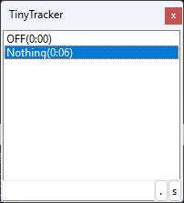
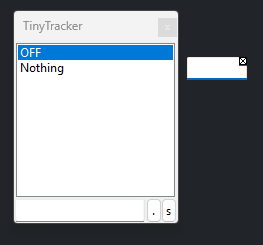
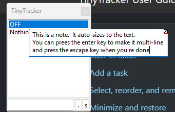
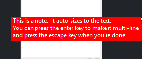
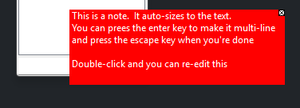

Main Window
The main window is where you choose the task you are currently working on.

Built-in tasks
OFFstops time tracking.Nothingtracks time without assigning it to a named task yet.
These two entries stay at the top of the list and cannot be removed.
Add a task
- Click in the task box at the bottom of the window.
- Type the task name you want.
- Press
Enter.
TinyTracker adds the task to the list and starts tracking it straight away.
Select, reorder, and remove tasks
- Click a task to start tracking it.
- Drag a task to move it somewhere else in the list.
- Double-click a task to copy its name into the task box.
- Press
Deleteto remove the selected task. - If you manually edit today's CSV while TinyTracker is open, TinyTracker will update accordingly.
Minimize and restore
- Double-click the window title bar, or press
Esc, to minimize or restore the window. - When minimized, TinyTracker becomes a tiny movable label.


- If Show time when minimised is enabled, the minimized label also shows the time already spent on the current task.
Quick time corrections
TinyTracker can shift time between Nothing and the selected task without opening the CSV file.
Ctrl++moves 1 minute fromNothingto the selected task.Ctrl+Shift++moves 5 minutes fromNothingto the selected task.Ctrl+-moves 1 minute from the selected task back toNothing.Ctrl+Shift+-moves 5 minutes from the selected task back toNothing.
This is useful when you forgot to switch tasks straight away and want to tidy up the day.
Labels
Press Ctrl+L to write a zero-minute label into today's CSV file.
- If the task box is empty, TinyTracker writes
label. - If the task box contains text, TinyTracker writes
label: your text.
Labels are useful for adding a marker or note into the time log.
Notes
Press Ctrl+N to open a small note window.
You can use notes as floating reminders while you work. They are not saved to disk, so once you close them or close TinyTracker, they are gone.
Press Ctrl+N when you want to create a new note. TinyTracker opens a small blank note window ready for typing.

Type directly into the note window. New notes open in edit mode straight away.

Press Enter to add another line. When you are done, press Esc to finish editing and leave the note visible on screen.

If you want to change the note later, double-click the note window to edit it again.

To close a note, click on the small 'x' on the top right of the note window
Open the data folder
Press Ctrl+. to open the folder that contains your TinyTracker files.
This is the easiest way to find your daily CSV files, list.txt, and the CustomFunctions folder.